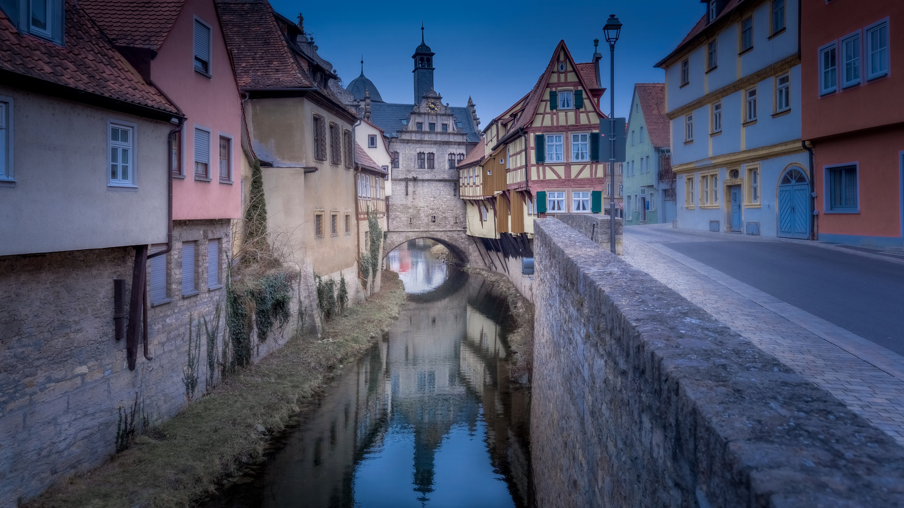

Marktbreit am Main, Germany. A serene vertical composition capturing the timeless harmony of the historic waterfront under soft, diffused skies...
Baden-Württemberg, Germany. A crisp, golden winter atmosphere warming up the historic stone towers over the Danube river.
For over two decades, my photography has been guided by a single, powerful instinct: a deep fascination with timelessness, endurance, and historical atmosphere. Rather than simply documenting structures, my work seeks to capture the emotional soul of ancient European architecture, framing spaces in a way that feels completely detached from the modern world.
If you're looking to acquire prints, feature my work, or collaborate on a historic preservation project, please get in touch using the form below.